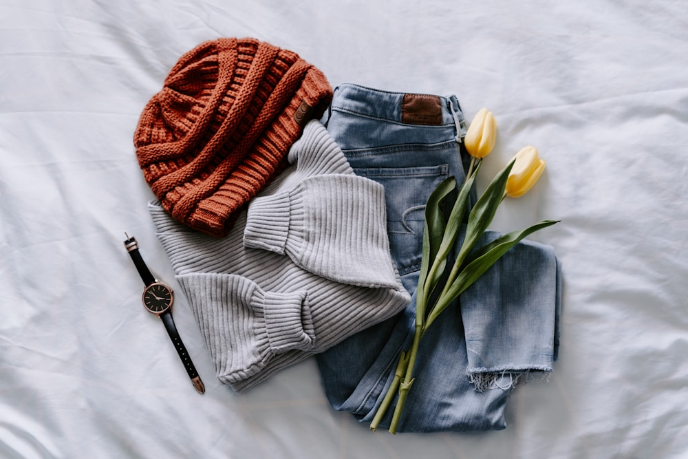

In an era dominated by high-speed computerized fast fashion and mass-produced ready-to-wear garments, the creation of a true bespoke winter overcoat stands as one of the last bastions of unhurried artisan mastery. While commercial clothing is manufactured in standardized sizes using synthetic glues and automated laser cutters in under thirty minutes, a bespoke coat represents over sixty hours of focused benchwork by master coatmakers whose craft has been handed down through centuries of European tailoring tradition.
A winter overcoat is the most structurally complex garment in classical tailoring. Unlike a lightweight summer jacket, an overcoat must carry heavy noble fabrics—such as 600-gram double-faced cashmere or heavyweight Scottish tweed—while maintaining a sculptural, fluid drape that floats effortlessly over tailored suits or chunky knitwear. In this haute tailoring masterclass, our master coatmakers take you behind the atelier doors to explore the intricate steps, anatomical geometry, and hand-stitched foundations that define Alpine Coat Gem.
1. The Foundation: Why Full Canvas Construction Is Non-Negotiable
The soul of any fine coat resides between the exterior cloth and the silk lining: the internal canvas foundation:
- The Problem with Fused (Glued) Coats: Over ninety-five percent of mass-market coats use heat-activated synthetic adhesive glue to bond a stiff polyester interlining directly to the outer wool. In cold rain or dry-cleaning solvent baths, this glue degrades, causing bubbling (delamination), stiffening, and irreversible puckering along the chest.
- The Free-Floating Full Canvas Solution: Alpine Coat Gem coats are built upon a completely un-glued, free-floating chest piece crafted from unbleached natural wool, soft camel hair, and genuine horsehair canvas woven in Yorkshire, England.
- Anatomical Memory & Natural Molding: Secured only at the seams with loose basting stitches, the horsehair canvas breathes with ambient humidity and molds to the unique contours of your chest and shoulders over time, creating a bespoke fit that becomes more comfortable with every passing winter.
“A glued coat is rigid and lifeless; a canvassed coat is an organic sculpture that breathes with your body heat and molds to your posture forever.”
2. Hand Pad-Stitching: Sculpting the Perfect Lapel Roll
Look at the lapel of an ordinary coat, and you will notice it lies flat and lifeless against the chest like cardboard. In contrast, the lapel of an Alpine Coat Gem overcoat rolls gracefully outward with an elegant three-dimensional curve known as the Sartorial S-Roll.
This sculptural roll is created through hand pad-stitching. A master tailor spends over six hours making thousands of tiny, diagonal chevron stitches (over 3,000 stitches per coat) that anchor the outer cashmere to the underlying horsehair canvas under varying hand tension. This deliberate differential tension forces the cloth to curl naturally around the chest, ensuring the lapel never flattens even after years of winter wear.
3. The Milanese Buttonhole: The Pinnacle of Hand Finishes
One of the most revered hallmarks of true bespoke tailoring is the Milanese Buttonhole (also known as the Asola Lucida):
- The Gimp Foundation: A heavy silk cord (gimp) is held firmly across the edge of the hand-cut keyhole opening.
- Pure Silk Thread Wrapping: Using fine Japanese buttonhole silk, the artisan loops individual thread coils with microscopic precision around the cord, packing over eighty knots per inch.
- The Raised Gloss Finish: The resulting buttonhole resembles a gleaming, raised braided sculpture that protects the heavy buffalo horn buttons from tearing through noble cashmere fabric.
4. The Bespoke Fitting Journey: Three Essential Milestones
Every bespoke commission at our Manhattan salon at 181 Mercer Street progresses through three meticulous fitting stages:
- 1. The Anatomical Consultation & Paper Drafting: Over thirty individual measurements and posture photos are taken to draft a unique, individual paper pattern from scratch.
- 2. The Basted Fitting (Toile Fitting): The coat is assembled using temporary white cotton thread without pockets or lining. The master tailor inspects shoulder pitch, chest balance, and sleeve rotation directly on your body.
- 3. The Forward Fitting & Hand Finishing: The coat is disassembled, recut according to fitting adjustments, structured with the horsehair canvas, lined with pure cupro silk, and finished with hand-sewn buttonholes and hand-waxed thread.
5. Anatomical Drape & Shoulder Pitch Calibration
In classical bespoke coatmaking, the relationship between the neck, collarbone, and shoulder blade is referred to as Shoulder Pitch. Every human body exhibits natural asymmetries—such as a dropped right shoulder or forward-tilted neck posture from executive desk work. Mass-market coats assume a rigid, symmetrical mannequin shape, causing unsightly horizontal collar rolls and diagonal chest pull lines. Our master cutters hand-draft the shoulder slope and armscye rotation to match your exact postural alignment, allowing the coat to move effortlessly with your arms without pulling the lower hem.
6. The Mastery of Pure Bemberg Cupro Silk Linings
The interior lining of an Alpine Coat Gem garment is as meticulously engineered as the exterior. We utilize 100% Bemberg™ Cupro, a regenerated cellulosic silk spun from cotton linter in Japan. Cupro possesses an ultra-low friction coefficient, allowing the heavy winter overcoat to glide smoothly over fine wool suits and delicate silk shirts without static cling, while breathing actively to prevent torso overheating in heated environments.
7. Hand-Waxed Gutterman Silk Seam Construction
All stress-bearing structural seams—including armholes, side vents, and collar joins—are sewn using hand-waxed Gutermann pure silk thread passed through organic beeswax. The beeswax coats the silk fibers, sealing the needle punctures against wind penetration and providing flexible elasticity that expands with body motion without snapping.
8. The Craft of Hand-Setting Genuine Horn Buttons
Mass-produced garments attach buttons using high-speed automated sewing machines that pull threads too tight against the fabric, causing puckering and button loss. In our atelier, every natural buffalo horn button is hand-stitched with a raised 3 mm silk thread shank wrapped in beeswax. This shank provides the necessary clearance for thick winter cashmere to button smoothly without distortion, ensuring effortless closure for decades of winter wear.
9. The Eternal Value of Savile Row Craftsmanship
In a world of disposable seasonal fashion, a bespoke full-canvas overcoat represents an enduring sanctuary of personal elegance. It is a garment cut to your exact anatomical proportions, hand-stitched by master artisans, and engineered to drape with commanding authority through a lifetime of winter journeys.
10. Heirloom Care & Lifetime Alteration Support
To ensure your bespoke overcoat remains in flawless condition throughout your lifetime, our Manhattan atelier provides complimentary seasonal inspection, minor stitch maintenance, and anatomical resizing services for every commissioned piece.
11. The Tactile Geometry of Hand-Pressed Seams
Every seam on an Alpine Coat Gem garment is pressed by hand using heavy eight-kilogram tailor’s irons and damp linen pressing cloths. This slow, artisan shaping process shrinks and stretches the wool fibers into permanent three-dimensional curves that conform effortlessly to the human back and chest, ensuring an immaculate silhouette that machine pressing can never match.
12. The Quiet Signature of Bespoke Distinction
When wearing a truly canvassed overcoat, the feeling of effortless balance and weightless warmth provides an enduring sense of sartorial confidence that accompanies you through every winter journey.
Frequently Asked Questions on Bespoke Coat Tailoring

Gianni Vercelli
Head Bespoke Cutter at Alpine Coat Gem. Gianni completed his master tailoring apprenticeship in Biella, Italy, and has cut over three thousand bespoke luxury overcoats for international clients.